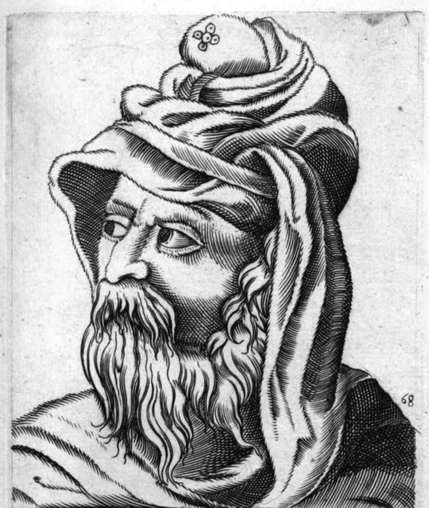

Who Was Pyrrho of Elis?
Pyrrho of Elis was an ancient Greek philosopher who lived approximately from the late fourth to the early third century BCE. He is traditionally regarded as an important early figure in the history of ancient Greek skepticism and as the philosophical figure after whom the later tradition of Pyrrhonism was named.
Pyrrho is especially associated with questioning whether human beings can establish the true nature of things with certainty. Instead of confidently affirming philosophical doctrines, the tradition associated with him emphasizes the difficulty of determining how things ultimately are.
However, it is important to distinguish the historical Pyrrho from the later philosophical movement called Pyrrhonism. Pyrrho left no surviving writings, and much of the evidence about his philosophy comes from later authors, especially reports preserved through his follower Timon of Phlius.
Because of this limited evidence, historians do not simply equate every doctrine of later Pyrrhonian skepticism with Pyrrho himself. His importance lies in his role as an early source of skeptical philosophical inquiry and as the figure who inspired a later tradition of ancient skepticism.
Pyrrho of Elis: Quick Facts
- Name — Pyrrho of Elis
- Period — Approximately 4th–3rd century BCE
- From — Elis, in the western Peloponnese of Greece
- Philosophical period — Hellenistic philosophy
- Associated with — Ancient Greek skepticism
- Later tradition — Pyrrhonism
- Known for — Skeptical inquiry, suspension of judgment, and the pursuit of tranquility
- Surviving writings — No writings by Pyrrho survive
- Important follower — Timon of Phlius
- Historical importance — An important early figure in the development of ancient skepticism
Pyrrho of Elis and the Rise of Hellenistic Philosophy

Pyrrho lived during a period of major transformation in Greek philosophy. He was roughly contemporary with other important Hellenistic thinkers, including Epicurus and Zeno of Citium.
Hellenistic philosophers were deeply concerned with questions about how human beings should live and how philosophical inquiry could help people achieve a stable and flourishing life. Different schools proposed different answers, including Epicureanism, Stoicism, and Skepticism.
In the skeptical tradition associated with Pyrrho, philosophical inquiry focused strongly on the difficulty of establishing definitive claims about reality. The goal was not simply to collect abstract doubts but to investigate competing arguments and examine whether certainty was actually possible.
Who Was Pyrrho and What Did He Do?
Relatively little is known with certainty about Pyrrho's life. Ancient biographical traditions contain numerous stories about his unusual behavior and philosophical attitude, but these accounts were written later and should be treated cautiously.
Pyrrho is traditionally associated with Elis, a city in the western Peloponnese. Ancient sources also connect him with the philosopher Anaxarchus, whom Pyrrho is said to have followed during the expedition of Alexander the Great.
Some ancient reports state that Pyrrho traveled east with Alexander's expedition and encountered philosophers or ascetic thinkers in the regions reached by the expedition. The details and philosophical significance of these reports remain debated by historians.
What can be established more securely is Pyrrho's importance in the development of a skeptical philosophical tradition and the influence his example had on later thinkers.
What Did Pyrrho Believe?
Reconstructing Pyrrho's philosophy is difficult because he left no surviving philosophical writings. Later authors preserve reports about his thought, but these accounts must be interpreted carefully.
One of the most important pieces of evidence comes from a report transmitted through Timon of Phlius. According to this testimony, Pyrrho's philosophical approach involved questioning whether things have determinate and stable natures that human beings can successfully identify.
The report presents three central questions: what things are like by nature, how we should be disposed toward them, and what follows from adopting that disposition.
According to this testimony, the result of recognizing the indeterminate character of things was an attitude of withholding assent, followed by freedom from disturbance or ataraxia.
Scholars disagree about exactly how these claims should be interpreted and about how closely this reported philosophy corresponds to the later Pyrrhonian movement.
What Is Pyrrho's Skepticism?
Ancient Greek skepticism is a philosophical approach that investigates whether human beings can attain secure knowledge about the things they discuss. The Greek term skepsis is connected with inquiry or investigation.
Pyrrho became the central historical figure associated with the later skeptical tradition called Pyrrhonism. The later Pyrrhonists developed methods for examining competing arguments and suspending judgment when no decisive reason for choosing between them could be established.
It is therefore more accurate to say that Pyrrho stands at the beginning of a tradition that developed into Pyrrhonism than to claim that every detailed doctrine found in later Pyrrhonian texts was explicitly formulated by Pyrrho himself.
What Is Suspension of Judgment in Pyrrhonian Philosophy?
Suspension of judgment, commonly associated with the Greek term epoché, became a central concept in the later development of Pyrrhonian skepticism.
To suspend judgment is to refrain from affirming or denying a philosophical claim when the available arguments do not provide sufficient grounds for a decisive conclusion.
The skeptical position is therefore different from simply declaring that a claim is false. A skeptic may investigate a proposition, consider arguments for and against it, and then withhold assent rather than confidently accepting either side.
This distinction is important because skepticism is not necessarily the claim that everything is false or that nothing exists. Its characteristic practice is the critical investigation of claims and the withholding of assent when certainty cannot be justified.
Pyrrho and Ataraxia: Philosophy and Tranquility
Ataraxia is a Greek term commonly translated as tranquility, freedom from disturbance, or untroubledness. It became an important goal in several Hellenistic philosophical traditions, although different schools understood its role in different ways.
In the skeptical tradition associated with Pyrrho, freedom from disturbance is connected with the suspension of judgment. If a person no longer feels compelled to settle every disputed philosophical question with certainty, the endless struggle between competing positions may lose some of its power to disturb the mind.
Ancient testimony about Pyrrho describes a connection between withholding judgment and tranquility. Later Pyrrhonian skepticism developed this idea into a more systematic account of how skeptical inquiry could lead to ataraxia.
Pyrrho, Truth, and the Limits of Human Knowledge
A major concern associated with Pyrrho is the question of whether human beings can determine the true nature of things.
The skeptical approach does not simply replace one philosophical theory with another. Instead, it examines the reasons offered for competing positions and asks whether any of them can establish the conclusion beyond reasonable dispute.
This makes ancient skepticism particularly important for the history of epistemology, the branch of philosophy concerned with knowledge, justification, belief, and the limits of human understanding.
Later Pyrrhonian philosophers developed sophisticated arguments against dogmatic claims to knowledge. These later arguments should not automatically be attributed word-for-word to the historical Pyrrho.
Did Pyrrho of Elis Write Any Books?
No surviving writings by Pyrrho of Elis are known. This creates a major difficulty for anyone trying to reconstruct his philosophy.
Much of the evidence about Pyrrho comes from later authors. One of the most important sources is the testimony associated with his follower Timon of Phlius.
Later authors also discussed Pyrrho and the skeptical tradition that developed around him. Because these sources were written later, they must be distinguished from direct writings by Pyrrho himself.
This is why historians are careful when making claims about exactly what Pyrrho taught. The evidence permits important conclusions, but not complete certainty about every detail of his philosophy.
Pyrrho and Timon of Phlius
Timon of Phlius was an important follower of Pyrrho and one of the main figures through whom Pyrrho's philosophical legacy was preserved.
Timon's writings do not survive in complete form, but fragments and reports preserved by later authors provide important evidence for understanding the early skeptical tradition.
The testimony attributed to Timon describes Pyrrho as asking what things are like by nature, how we should respond to them, and what follows from that response. This testimony is especially important because Pyrrho himself left no philosophical work.
Modern scholars continue to debate how literally the later evidence should be interpreted and whether Pyrrho himself should be described as a skeptic in precisely the same sense as later Pyrrhonists.
What Is the Difference Between Pyrrho and Pyrrhonism?
Pyrrho of Elis was a historical philosopher who lived in the fourth and third centuries BCE. Pyrrhonism, by contrast, refers to a later skeptical philosophical tradition that regarded Pyrrho as an important inspiration.
The later Pyrrhonian tradition became much more systematic than the surviving evidence allows us to establish for Pyrrho himself. Later philosophers developed techniques for setting competing arguments against one another and suspending judgment when no decisive resolution could be established.
The distinction matters because calling Pyrrho a "Pyrrhonian skeptic" can suggest that he explicitly taught the complete system described in later skeptical texts. Historians generally treat this identification with caution.
Pyrrho is best understood as the historical figure whose philosophy and example became an important source for the later tradition of Pyrrhonian skepticism.
How Does Pyrrhonian Skepticism Work?
The mature Pyrrhonian method involves examining opposing arguments concerning a philosophical question. When the arguments appear to have comparable force, the skeptic refrains from making a definitive judgment.
This practice is sometimes described through the idea of equipollence, meaning that opposing arguments are sufficiently balanced that neither side can simply be accepted as established.
The later Pyrrhonian skeptic does not begin with the dogmatic claim that a particular philosophical conclusion is false. Instead, the skeptic investigates the issue and suspends judgment when the inquiry fails to establish one side over the other.
This skeptical practice became one of the most influential forms of ancient philosophical criticism and later contributed to discussions about knowledge, certainty, and rational justification.
Did Pyrrhonian Skeptics Reject Everyday Experience?
Ancient skepticism should not simply be understood as a refusal to act or as the claim that ordinary experiences are completely meaningless.
Later Pyrrhonian philosophers distinguished between how something appears and the stronger claim that they know how that thing really is in its ultimate nature.
For example, a person may have a visual appearance of an object without claiming that the object is known with certainty to possess exactly the properties it appears to possess.
This distinction allowed later skeptics to explain how skeptical inquiry could coexist with ordinary practical life while avoiding dogmatic claims about ultimate reality.
Did Pyrrho Travel to India?
Ancient sources associate Pyrrho with the expedition of Alexander the Great and report that he traveled east with Anaxarchus.
Later interpretations have suggested that Pyrrho may have encountered Indian ascetic or philosophical traditions during this journey. Some modern scholars have explored possible similarities between aspects of Pyrrhonian thought and Indian philosophy.
However, the historical evidence does not allow us to confidently identify a specific Indian teaching as the source of Pyrrho's philosophy. Claims that Pyrrhonism was directly derived from Buddhism, Jainism, or another particular Indian school should therefore be treated as speculative rather than established historical fact.
The safest historical conclusion is that reports connect Pyrrho with Alexander's eastern expedition, while the exact philosophical impact of any encounters he may have had in India remains uncertain.
Pyrrho and Ancient Greek Skepticism
Ancient skepticism became one of the major intellectual traditions of Hellenistic philosophy. Two major forms developed: the skeptical tradition associated with Pyrrho and the skeptical phase of Plato's Academy, often called Academic Skepticism.
The Pyrrhonian tradition placed particular emphasis on inquiry, suspension of judgment, and the pursuit of tranquility. Its later representatives developed increasingly sophisticated arguments for challenging claims to secure knowledge.
The history of ancient skepticism therefore extends well beyond Pyrrho himself. Later figures such as Aenesidemus and Sextus Empiricus played important roles in developing and preserving Pyrrhonian skepticism.
Pyrrho's Influence on Later Skeptical Philosophy
Pyrrho's name became attached to a skeptical tradition that continued long after his death. The later movement eventually produced important philosophical works explaining skeptical methods and arguments.
Sextus Empiricus, who probably lived in the second or third century CE, is the most important surviving source for the mature Pyrrhonian tradition. His Outlines of Pyrrhonism presents a systematic account of skeptical inquiry, suspension of judgment, and tranquility.
Sextus' works are therefore extremely important for understanding Pyrrhonian skepticism, but they should not be mistaken for writings by Pyrrho himself.
Pyrrho of Elis: Main Philosophical Ideas
Because the evidence for Pyrrho is indirect, his philosophical ideas must be presented with appropriate historical caution.
Skeptical Inquiry
Pyrrho is associated with a philosophical approach that questions whether human beings can securely determine the nature of things.
Suspension of Judgment
The later Pyrrhonian tradition made suspension of judgment central to skeptical practice, particularly when opposing arguments appear equally persuasive.
Questioning Dogmatic Beliefs
Ancient skepticism challenged the assumption that philosophical claims could simply be accepted as established without sufficient justification.
Tranquility
Pyrrhonian skepticism connects the suspension of judgment with ataraxia, or freedom from disturbance.
Awareness of the Limits of Knowledge
The skeptical tradition encourages philosophers to recognize the limits of human certainty rather than treating uncertain conclusions as established facts.
What Do We Actually Know About Pyrrho?
Pyrrho is a good example of the difficulties involved in studying ancient philosophers whose own writings have not survived.
Relatively Well-Attested
- Pyrrho was associated with Elis in ancient Greece.
- He lived approximately during the fourth and third centuries BCE.
- He became an important figure in the history of ancient skepticism.
- He is associated with the later tradition known as Pyrrhonism.
- Ancient testimony about him was preserved through later authors, including material connected with Timon.
Traditionally Reported
- His association with Anaxarchus.
- His participation in Alexander the Great's eastern expedition.
- His encounters with ascetic thinkers during the eastern expedition.
- Various stories portraying his unusually detached way of life.
Uncertain or Disputed
- The exact philosophical doctrines held by Pyrrho himself.
- The precise relationship between Pyrrho's philosophy and later Pyrrhonism.
- The extent to which encounters in India influenced his philosophy.
- Whether all anecdotes about his life accurately describe historical events.
Pyrrho Compared with Epicureanism and Stoicism
Pyrrho lived during the same broad Hellenistic period as Epicurus and Zeno of Citium, but their philosophical approaches were significantly different.
Epicurean philosophy developed a systematic account of nature, pleasure, human psychology, and the good life. Stoicism likewise developed a comprehensive philosophical system concerning logic, physics, and ethics.
Skeptical philosophy instead focused on examining claims and questioning whether philosophical certainty could be achieved.
This difference illustrates the diversity of Hellenistic philosophy: some schools sought to establish a coherent philosophical account of reality, while skeptics emphasized the difficulty of establishing such accounts with certainty.
Why Is Pyrrho of Elis Important in Philosophy?
Pyrrho is important because he became a foundational figure in the history of philosophical skepticism. His name became attached to one of the major skeptical traditions of the ancient world.
His philosophical legacy raises a fundamental epistemological question: How can we know that our beliefs about reality are actually justified?
This question has remained important throughout the history of philosophy. Later philosophers continued to investigate certainty, evidence, perception, reason, and the limits of human knowledge.
Pyrrho's importance therefore does not depend on proving every anecdote about his life or attributing every later skeptical argument to him. His historical significance comes from his place at the beginning of a philosophical tradition that made the examination of certainty and belief a central philosophical activity.
Pyrrho of Elis Explained Simply
Pyrrho of Elis was an ancient Greek philosopher associated with the beginnings of the skeptical tradition later called Pyrrhonism.
Instead of confidently claiming that philosophical questions had definite answers, Pyrrho's tradition emphasized investigating competing arguments and recognizing how difficult it can be to establish certainty about the ultimate nature of things.
Later Pyrrhonian philosophers connected this approach with suspension of judgment and ataraxia, or tranquility.
- Philosopher: Pyrrho of Elis
- Period: Fourth–third century BCE
- Tradition: Ancient Greek skepticism
- Later movement: Pyrrhonism
- Central concern: The limits of human certainty
- Associated practice: Suspension of judgment
- Associated goal: Ataraxia, or tranquility
- Important follower: Timon of Phlius
A Famous Principle Associated with Pyrrhonism
“No more this than that.”
Frequently Asked Questions About Pyrrho of Elis
Who was Pyrrho of Elis?
Pyrrho of Elis was an ancient Greek philosopher who lived around the fourth and third centuries BCE. He became an important figure in the history of ancient Greek skepticism and inspired the later tradition known as Pyrrhonism.
What is Pyrrho famous for?
Pyrrho is famous for his association with ancient skepticism and for inspiring the later Pyrrhonian tradition, which emphasized skeptical inquiry and suspension of judgment.
What did Pyrrho believe?
The exact philosophy of Pyrrho is difficult to reconstruct because he left no surviving writings. Later testimony associates him with the view that things are difficult or impossible to determine in their ultimate nature and with an attitude of withholding assent.
What is Pyrrhonism?
Pyrrhonism is a later tradition of ancient Greek skepticism named after Pyrrho of Elis. It developed methods for examining opposing arguments and suspending judgment when no decisive conclusion could be established.
What is Pyrrhonian skepticism?
Pyrrhonian skepticism is a form of ancient skepticism that emphasizes philosophical inquiry, opposing arguments, suspension of judgment, and the pursuit of tranquility.
What is suspension of judgment?
Suspension of judgment means refraining from affirming or denying a disputed claim when the evidence or arguments do not provide a sufficient basis for a definitive conclusion.
What is epoché in philosophy?
Epoché is a Greek term commonly used in discussions of skeptical suspension of judgment. In the later Pyrrhonian tradition, it refers to withholding assent rather than affirming a definitive philosophical conclusion.
What is ataraxia according to Pyrrhonian skepticism?
Ataraxia means tranquility or freedom from disturbance. In the skeptical tradition, suspension of judgment is connected with ataraxia because abandoning the need to settle every disputed philosophical question can reduce disturbance.
Did Pyrrho write any books?
No surviving writings by Pyrrho are known. Much of what is known about his philosophy comes from later sources, including testimony associated with his follower Timon of Phlius.
Did Pyrrho travel to India?
Ancient sources associate Pyrrho with Alexander the Great's eastern expedition. Later traditions and modern scholarship have discussed possible encounters with Indian ascetic thinkers, but the precise philosophical influence of such encounters remains uncertain.
Was Pyrrho the founder of skepticism?
Pyrrho is traditionally regarded as the central figure associated with the Pyrrhonian skeptical tradition. However, ancient skeptical tendencies existed before him, and the systematic form of Pyrrhonian skepticism developed considerably after his lifetime.
Who was Timon of Phlius?
Timon of Phlius was an important follower of Pyrrho. His surviving fragments and the reports about his writings are significant sources for reconstructing aspects of Pyrrho's philosophical legacy.
How is Pyrrho different from Sextus Empiricus?
Pyrrho was an earlier Greek philosopher whose own writings do not survive. Sextus Empiricus lived several centuries later and produced the most extensive surviving presentation of Pyrrhonian skepticism. Sextus therefore provides evidence for the later tradition rather than direct writings by Pyrrho.
Why is Pyrrho important today?
Pyrrho remains important because the skeptical questions associated with his philosophical legacy continue to influence debates about knowledge, certainty, justification, perception, and the limits of human understanding.
Related Ancient Greek Philosophers
Pyrrho belongs to the wider tradition of ancient Greek and Hellenistic philosophy. Explore philosophers who developed different approaches to knowledge, reality, ethics, and the good life.
Philosophy Branches Connected to Pyrrho
Pyrrho's philosophical legacy is particularly important for epistemology, where philosophers investigate knowledge, justification, certainty, and the limits of human understanding. His connection with the Hellenistic search for tranquility also relates to philosophical questions concerning how human beings should live.
Why Pyrrho of Elis Still Matters
Pyrrho did not leave behind a philosophical system comparable to the surviving works of Plato or Aristotle. Much of his philosophical legacy has instead reached us through later testimony and through the skeptical tradition that developed around his name.
Yet the questions associated with Pyrrho remain fundamental to philosophy: How can we know that our beliefs are justified? Can competing arguments ever establish certainty? What should we do when evidence does not decisively support one position over another?
The later Pyrrhonian tradition transformed these questions into a sustained method of philosophical inquiry. Its emphasis on examining arguments, suspending judgment, and seeking freedom from disturbance made skepticism one of the enduring traditions of ancient philosophy.
Explore Great Philosophers